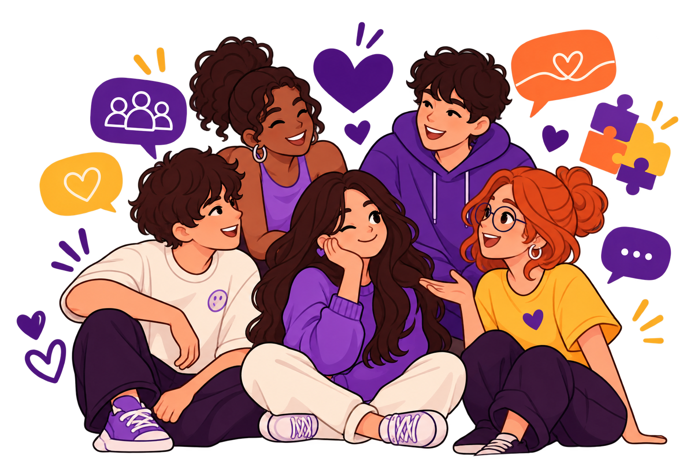

Comunicação
Muita briga nasce de algo que não foi dito, ou foi dito do jeito errado. Aprenda a expressar o que sente sem acusar e a ouvir o outro sem já preparar a defesa.Dica: troque “você sempre...” por “eu me sinto... quando...”.
Ferramentas claras para se comunicar, impor limites
e construir vínculos saudáveis no amor, na família e
no trabalho

Muita briga nasce de algo que não foi dito, ou foi dito do jeito errado. Aprenda a expressar o que sente sem acusar e a ouvir o outro sem já preparar a defesa.Dica: troque “você sempre...” por “eu me sinto... quando...”.
Limite não é afastar o outro, é dizer com clareza até onde você está confortável. Quando você se respeita, a relação ganha confiança e equilíbrio. Dica: um “não” dito com calma vale mais do que um “sim” dado com ressentimento.
Discordar faz parte de qualquer relação. O que importa é como a conversa acontece. Veja como esfriar a cabeça, focar no problema e chegar a um acordo sem que ninguém saia ferido.
Términos, afastamentos e mudanças doem, mas também abrem espaço para algo novo. Entenda o luto da relação, cuide de você e reconstrua com mais maturidade. Dica: não existe prazo certo para se sentir melhor, então respeite o seu tempo.
Relacionamento saudável não é ausência de conflito - é saber atravessá-lo juntos, com respeito